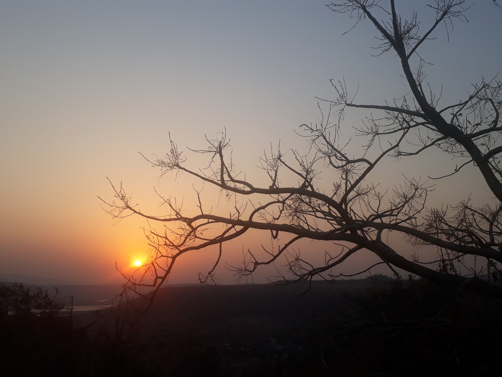

Sahyadri
School
Krishnamurti Foundation India — six years on a hillside in the Western Ghats.
"If you sit quietly, not in a room, but out in nature, where you can hear the birds, watch the sunset, and look at the quiet waters, then you will discover that there is a silence which is not manufactured by thought… In that silence, you begin to understand yourself."
— J. Krishnamurti
images/sahyadri.jpg
900 × 1200 or larger
Sahyadri School is nestled in the imposing, undulating Western Ghats, far from bustling cities and buzzing traffic. It is a place where people aren't chasing glory or fame; instead, they work together not out of resignation, but out of a deep sense of shared purpose and ownership. Everyone has a story to tell—not about fancy cars or gadgets, but about real experiences, like a biology teacher escaping a bear armed only with three matchsticks. Nothing feels disingenuous.
Looking back at my six years at Sahyadri, my most cherished memory is Astachal. Just before sunset, the entire school would gather on the edge of the hill, scattering across the landscape in quiet observation. Watching the sun dip over the majestic Bhima River gave me a much-needed moment to look inward—to reflect on my place in the world and discover what my heart truly wanted. Those quiet moments taught me more than any textbook ever could. They helped me peel away the facade I had built to fit in, laying the foundation for who I am and who I strive to become.